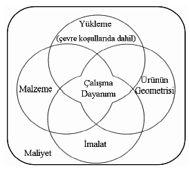
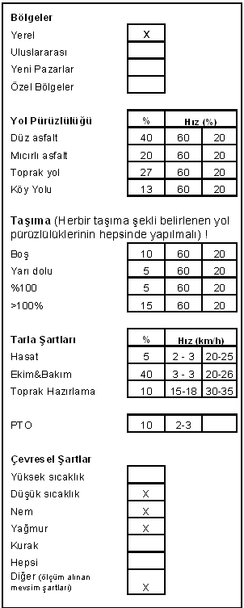
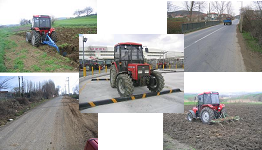
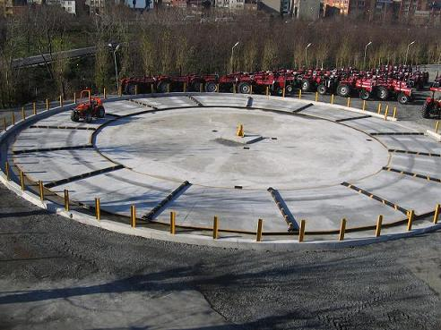
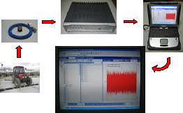
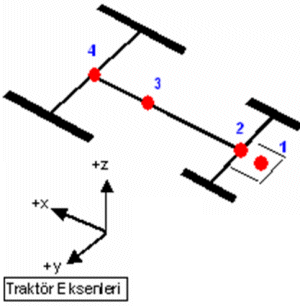
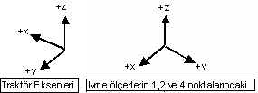

|
3. Kullanýcý profilin tanýmlanmasý
Aracýn müþteri profili ve kullaným þartlarý deðiþiklik gösterdiði için bütün kullaným bölgelerindeki koþullarý kapsayacak þekilde ortak bir tasarýmýn yapýlmasý gereklidir. UZEL'in satýþ yapmayý planladýðý her bölgenin kullanýcý profiline göre traktörlerin yýllýk çalýþma saatleri ve kullanýlan ekipmanlar belirlenerek istatistiksel bilgileri toparlanýp ve hedef kullanýcý profili ve kullaným þartlarý seçilmiþtir.
Bir aracýn veya parçanýn çalýþma dayanýmýnýn saptanabilmesi için gerekli dört parametre Þekil 6'de verilmiþtir. [4]

Þekil 6. Hýzlandýrýlmýþ Araç Testleri Yöntemleri
Bunlar çevre koþullarýnýn da dahil olduðu aþaðýdaki parametrelerdir;
- yükleme durumu,
- ürünün geometrisi,
- malzemesi,
- imalat özellikleridir.
Uygun bir tasarýmýn gerçekleþtirilebilmesi için de, çalýþma sýrasýnda karþýlaþýlan dýþ yüklerin, ürünün kritik bölümlerine etkiyen lokal gerilmelerin, malzemenin yorulma davranýþýyla ilgili özelliklerinin bilinmesi gereklidir.

Tablo 2. Traktör kullanýcý profiline baðlý olarak oluþturulan Çalýþma Çevrimi
Test konusu araç olan traktör için hangi þartlarda test edileceði traktörün gerçek þartlarda nasýl ve hangi amaçla kullanýldýðýna baðlýdýr. Çalýþma þartlarý traktörün boyutuna, özelliklerine ve kullanýlan ekipmanlara göre farklýlýk göstermektedir. Traktörün kullanýldýðý tarlalarýn toprak yapýsý ve arazi koþullarý traktörün maruz kaldýðý hasarlarýn tanýmlanmasýnda önemli faktörlerdir. Traktör tarla sürmek dýþýnda, römork ile beraber toprak, asfalt ve kumlu gibi farklý özellikte yollarda taþýmacýlýkta da kullanýlmaktadýr. Ayrýca hava þartlarý traktörün çalýþmasýný etkileyen diðer önemli faktördür. Tüm özellikler bir araya getirildiðinde çok parametreli bir kullanýcý profili Tablo 2'de karþýmýza çýkmaktadýr. Tabloda belirtilen çalýþma þartlarý yerel pazara yönelik olarak hazýrlanmýþtýr. Hangi yollarda ve tarla iþlemi Tabloda belirtilen çalýþma çevriminde Taþýma ve Tarla baþlýðý altýndaki çalýþma þartlarý % 100 traktör çalýþmasýný temsil etmektedir. [3]
Yol pürüzlülüðü baþlýðý altýndaki çalýþmalar ise taþýmanýn alt aþamalarýdýr. Traktörün taþýma sýrasýndaki her bir durumu için belirtilen yol pürüzlülüklerinin hepsinde çalýþmalýdýr ve her bir taþýma kendi içinde tüm yol pürüzlülük çalýþmasý için deðerlendirilmelidir.
Veri toplama iþlemi sýrasýndaki hava þartlarý Tablo 2'de belirtilmiþtir.
4. Gerçek saha verilerinin toplanmasý
Traktörün hýzlandýrýlmýþ ömür testini yapmak için gerekli test parametrelerini oluþturmak amacýyla traktör ile normal çalýþma þartlarýnda ivme deðerleri ölçülmüþtür.
Traktör üzerinden gerçek saha verileri ve eþdeðer test yükünü oluþturabilmek için test pistindeki veriler ivme olarak toplanmýþtýr (Þekil 7).


Þekil 7. Gerçek Saha ve Test Pisti Verilerinin Toplanmasý.
Traktör deðiþik þartlarda çalýþtýrýlmýþ ve üzerine 4 farklý noktaya yerleþtirilen 3 eksenli ivme ölçerler ile ivme deðerleri ölçülmüþ ve kaydedilmiþtir. Veri toplama iþlemi 3 eksenli 100 mV/g hassasiyete sahip 4 adet ICP ivme ölçer kullanýlarak yapýlmýþtýr. Örnekleme hýzý 2048 S/s olarak ayarlanmýþtýr. Traktör üzerine yerleþtirilen ivme ölçerlerin kablolarý on iki kanallý veri toplama cihazýna baðlanarak en rahat çalýþmayý saðlayacak þekilde traktör üzerine sabitlenmiþtir (Þekil 8).

Þekil 8. Veri Toplama Cihazý ve Yazýlým
Traktör eksenleri Þekil 9'daki gibi alýnmýþtýr ve ivme ölçerlerin yerleþtirilme durumuna baðlý olarak eksenlerin doðru olarak tanýmlanabilmesi için veri toplama programýnda deðiþiklik yapýlmýþtýr.

Þekil 9. Traktör Eksenleri ve Ývme Ölçerlerin Yerleþimi
Ývme ölçerler 3 numaralý noktada traktör eksenleri ile çakýþýk olarak yerleþtirilmiþtir. Bunun dýþýndaki noktalarda (1,2,4) ivme ölçerler Þekil 10'daki yerleþtirilmiþtir.

Þekil 10. Ývme Ölçerlerin Eksen Bilgileri
Veri toplama iþlemi, traktörün normal þartlarda ömrü boyunca kullanýldýðý durumlar göz önüne alýnarak oluþturulan bir çalýþma çevrimi doðrultusunda yapýlmýþtýr. Oluþturulan tabloda ölçüm almak için gerekli çalýþmalar aþaðýdaki gibidir;
- Römork doluluk oranýnýn deðiþimleri göz önüne alýnarak deðiþik yol karakteristiklerinde "TAÞIMA" yapýlmasý,
- Çiftçinin ihtiyacýna göre yapýlan "TARLA ÝÞLERÝ" nin yapýlmasý,
- "TEST PÝSTÝ" nde çalýþma yapýlmasý.
Ölçümler yol, tarla ve bumptrack pistinde 30'ar saniyelik süreler boyunca alýnmýþtýr. Test pistinde yapýlan ölçümler haricindeki çalýþmalarda traktörün her çalýþma þartý için iki ölçüm alýnmýþtýr (traktörün çalýþma hýzý ve yol karakteristiðinin izin vermediði durumlarda sadece bir veri alýnmýþtýr).
Alýnan verilerin sayýsal olarak daðýlýmý aþaðýdaki gibidir;
- Yol verileri: xx
- Tarla verileri: xx
- Bumptrack test pisti verileri: xx
Toplam: xxx adet ölçüm alýnmýþtýr.
4.1. Yol verileri
Yol verileri deðiþik viteslerde ve devirlerde farklý yol karakteristikleri denenerek römorkun dört çeþit doluluk oranýna göre alýnmýþtýr. Yol çeþitleri;
- Düz Asfalt
- Mýcýrlý Asfalt
- Toprak Yol
- Köy Yolu
Römork doluluk oraný (%xx dolu römorkta x ton, %xx dolu römorkta x ton ve %xx dolu römorkta x ton çakýl bulunmaktadýr);
- Boþ römork
- % xx dolu römork
4.2. Tarla verileri
Tarla verileri farklý ekipmanlar kullanýlarak deðiþik vites ve devirlerde alýnmýþtýr. Kullanýlan Ekipmanlar;
- Pulluk
- Týrmýk
- Kazayaðý
- Mibzer
- Gübre Makinesi
- Ýlaçlama makinesi
4.3. Test pisti verileri
Test pistinde alýnan deðerler sýrasýnda saha þartlarýný oluþturmak için traktörün ön ve arka tarafýnda aðýrlýklar kullanýldý. Traktör sürücüsüz olarak test pistinde farklý durumlarda çalýþtýrýlmýþ ve saha testlerindeki ayný noktalardan veriler toplanmýþtýr.
|